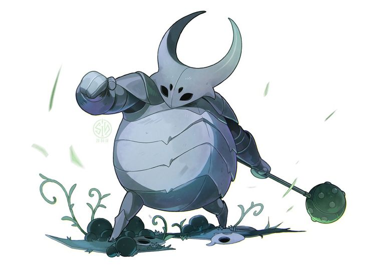

Ложный рыцарь
Первый босс игры, таинственный воин в доспехах, первая стена, которую
игроку предстоит преодолеть.
На самом деле Ложный рыцарь это Опарыш, которого свела с ума странная
сила. Поселился в украденном бранированном панцире, который использовал
для защиты своих братьев. Как и большинство обитателей Халлоунеста,
поддался Чуме.

Тактика
Босс имеет 5 видов атак, часть из которых открывается только на
втором этапе сражения с ним.
Атаки:
1. Замахивается и бьет булавой по земле, создавая ударную волну
2. Прыгает по арене.
3. Ударяет булавой по земле в прыжке.
4. Появляется после нанесения определенного количества урона. Из
доспеха показывается голова Опарыша. Когда он получит достаточное
количество урона, Ложный Рыцарь прыгает на середину арены, нанося
удары в разные стороны, что приводит к падению с потолка камней.
5. Камнепад начинается при первой атаке, когда Опарыш в первый раз
впадёт в ярость. Когда он впадёт в ярость дважды, атака 3 также будет
провоцировать камнепад.
Несмотря на обилие атак, босс достаточно прост, достаточно атаковать
его, и отходить на безопасное расстояние, когда он замахивается булавой
Из особенностей можно отметить, что души накапливаются только при нанесении
ударов самому опарышу, при нанесении ударов броне они не выпадают.